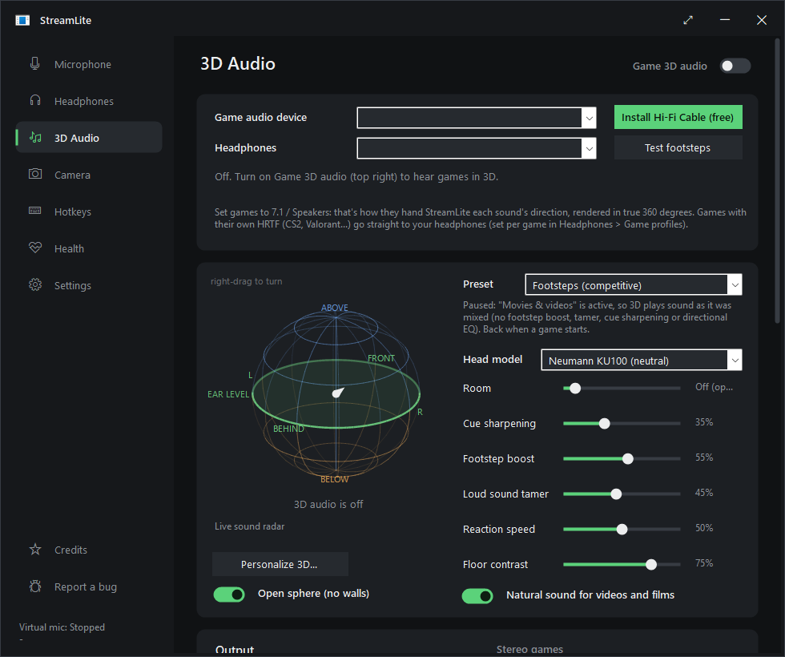
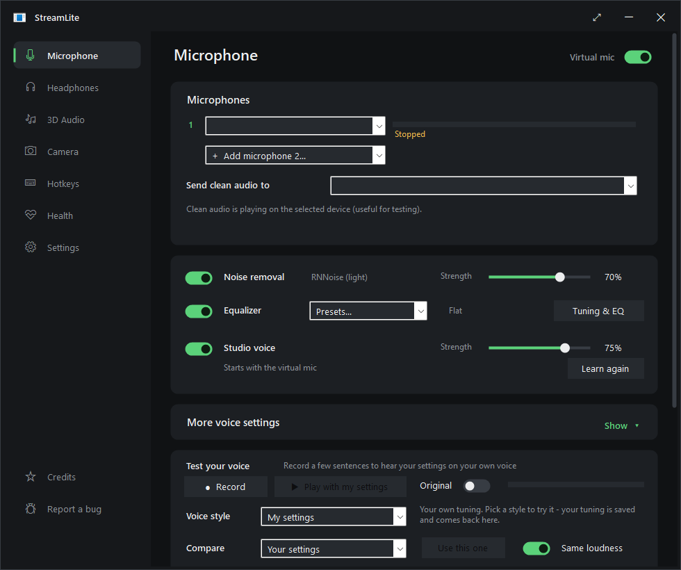
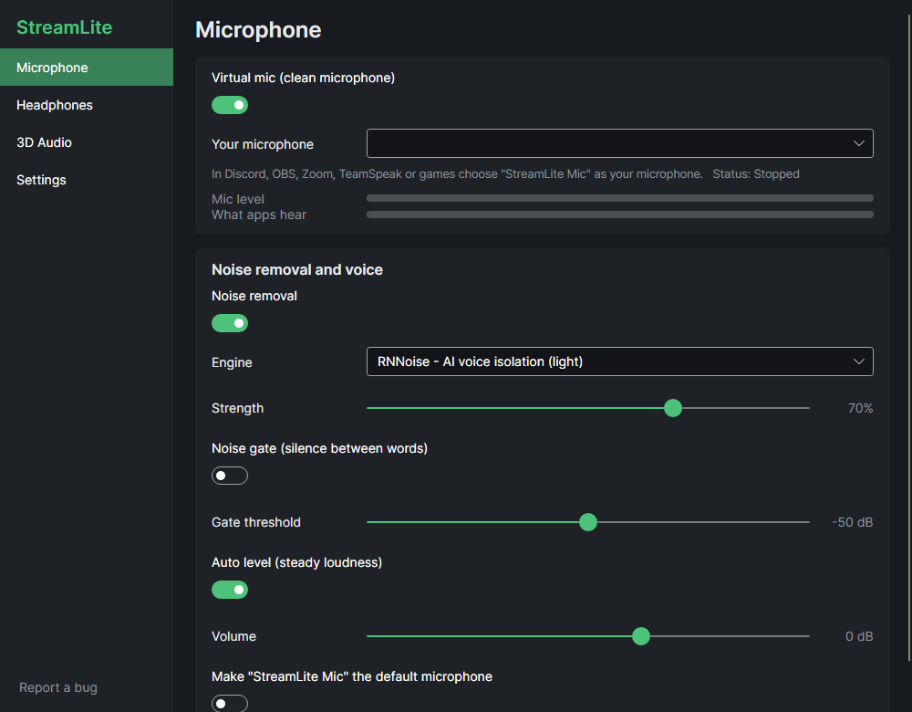
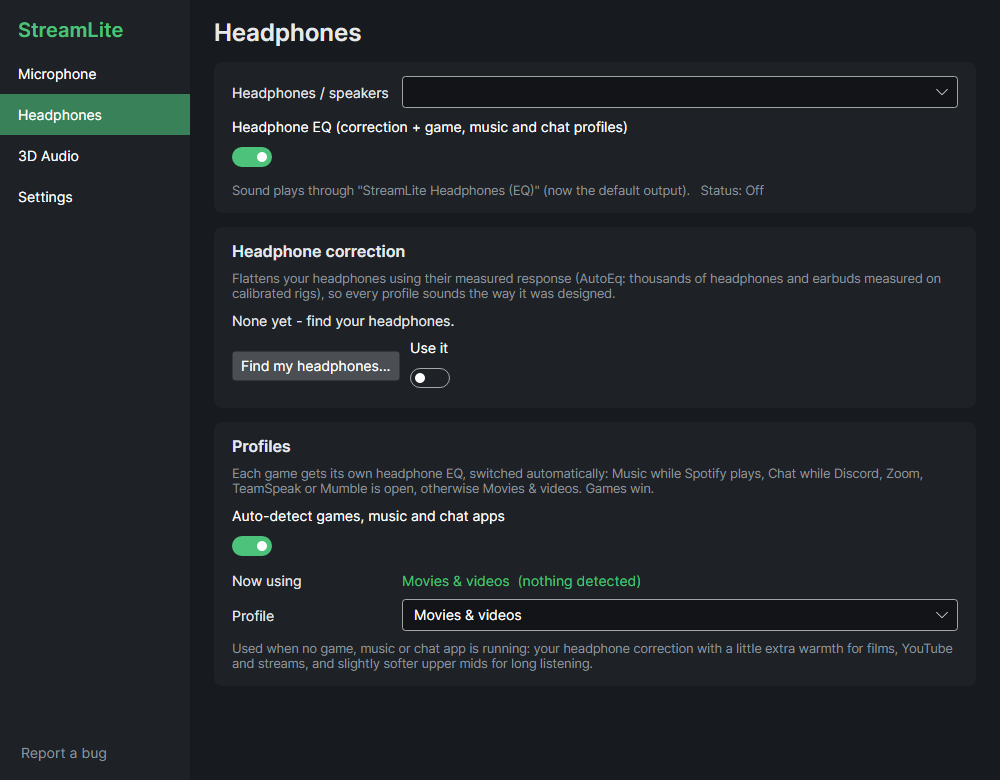
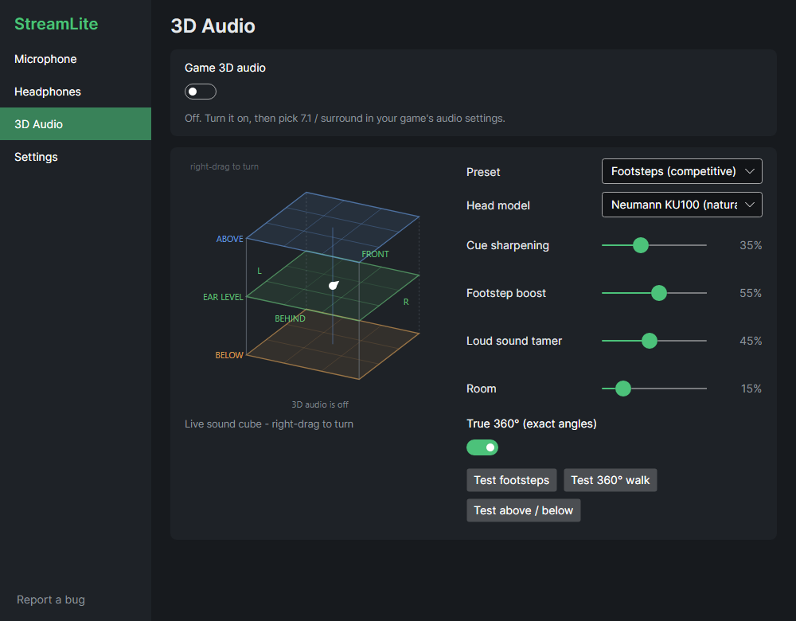

StreamLite removes background noise from your microphone with AI, turns games' surround sound into 3D audio for your headphones, and makes your headphones sound right. It works with Discord, OBS, Zoom, TeamSpeak and games, on Windows and Linux.
Windows 10/11 and Linux (64-bit). Free and open source (GPL-3.0).

It removes keyboards, fans, PC hum, traffic, dogs and room echo. Choose RNNoise (light) or DeepFilterNet 3 (studio quality, runs on your graphics card on Windows).
It includes a noise gate, auto level, compressor, de-esser, de-hum, EQ and voice styles. Record yourself and hear the result before your friends do.
Games' 7.1 sound becomes 3D sound on any headphones, using measured human-like heads. You get true 360° placement, a footstep boost and a loud-sound tamer.
It shows where sounds come from on three floors: below, at ear level and above. Right-drag the cube to look at it from any side.
Find your headphones among thousands of measured models (AutoEq), and StreamLite makes them sound neutral.
Each game gets its own sound. Music applies while Spotify plays, and Chat applies while Discord, Zoom, Teams, TeamSpeak or Mumble is open.
The "StreamLite Camera" virtual webcam can blur your room, act as a green screen without a green screen, follow your face and fix the lighting.
It installs the free drivers it needs on Windows, updates itself, and has a Report a bug button.
Pick your system. Every file is on the latest release, with its SHA-256 checksum in SHA256SUMS.txt.
Don't want to install anything? Use the portable zip instead. Unzip it anywhere and run StreamLite.exe.
Needs Windows 10 or 11 (64-bit). The AI camera needs Windows 11. DeepFilterNet on the graphics card needs a DirectX 12 GPU; without one it runs on the CPU.
Download streamlite_x.y.z_amd64.deb. Double-click it to open your software center, or run:
sudo apt install ./streamlite_*_amd64.debThis works on Ubuntu 20.04+, Debian 11+, Linux Mint, Pop!_OS, Zorin, elementary and KDE neon. Remove it with sudo apt remove streamlite.
Download streamlite-x.y.z-1.x86_64.rpm, then run one of these:
# Fedora, Nobara
sudo dnf install ./streamlite-*.x86_64.rpm
# openSUSE
sudo zypper install --allow-unsigned-rpm ./streamlite-*.x86_64.rpmRemove it with sudo dnf remove streamlite or sudo zypper remove streamlite.
Download PKGBUILD into an empty folder, then run:
makepkg -siThis works on Arch, Manjaro, EndeavourOS, CachyOS and Garuda. The package is called streamlite-bin. For a new version, download the new PKGBUILD and run makepkg -si again; StreamLite tells you when one is out.
This installs into your home folder and adds StreamLite to your app menu:
curl -fsSL https://raw.githubusercontent.com/NermalYT/StreamLite/main/packaging/linux/get.sh | shDownload StreamLite-x.y.z-x86_64.AppImage, make it executable (chmod +x StreamLite-*.AppImage) and run it. The AppImage updates itself.
Unpack streamlite-x.y.z-linux-x64.tar.gz and run ./install.sh to install it just for you, or sudo ./install.sh --system to install it for everyone. Remove it with uninstall.sh.
pipewire-pulse) or PulseAudio, which every mainstream desktop already has, plus pactl. The packages pull it in. With the tarball or AppImage, install pulseaudio-utils (Debian, Ubuntu, Fedora, openSUSE) or libpulse (Arch) if StreamLite says it's missing. Run streamlite --selftest to check everything.

| Setting | What it does |
|---|---|
| Noise removal | RNNoise is light and good for most rooms. DeepFilterNet 3 removes more noise and keeps your voice fuller. On Windows it can run on your graphics card. Classic uses the least CPU. |
| Strength | How far background noise is turned down. 70% sounds natural. Go up for loud rooms. |
| Noise gate | Mutes what's left of the background while you don't talk. Smooth fades out; Hard cuts. |
| Auto level | Lifts a quiet voice and tames a loud one, so friends hear you at the same level. Turn off Discord's automatic gain control if you use it. |
| Compressor, de-esser, de-hum, low cut | Even out your voice, soften "s" sounds, remove 50/60 Hz mains hum and remove rumble. |
| Voice styles | Ready-made sounds to try: Natural, Clear for chat, Broadcast, Noisy room, Late night, Deep & warm, Raw. Your own tuning is kept under My settings. |
| Test your voice | Records a few sentences and plays them back with your settings, so you hear what others hear. |
| Mic input | For audio interfaces and multi-channel mics. Auto uses only the inputs that carry your voice, so an XLR mic on input 1 isn't made 6 dB quieter by an empty input 2, and an out-of-phase laptop channel can't cancel you. You can also mix all inputs or pick one. On Windows it's under Tuning & EQ → Noise removal. |
Find my headphones searches AutoEq, which has thousands of headphones and earbuds measured on calibrated rigs. It downloads the correction for yours, and every profile sounds the way it was designed on top of that. Each headset or pair of earbuds keeps its own correction: switch devices and StreamLite switches corrections. If your exact model isn't measured, it shows the closest one.
With Auto-detect on, StreamLite picks the sound for what you're doing:
Games win over chat, so you get game sound while you talk on Discord in a match. Pick a profile by hand to turn auto-detect off.

On Windows the EQ runs through Equalizer APO, so it applies to every app. On Linux, apps play through StreamLite Headphones (EQ), which StreamLite makes the default output while it runs.
The cube has three floors: BELOW EAR LEVEL ABOVE. Each floor is split into nine positions: front-left, front, front-right, left, centre, right, behind-left, behind and behind-right. You're the white dot in the middle of ear level.
Right-drag the cube to turn it and look from any side. Right double-click puts it back. The tests (footsteps, 360° walk, above / below) show where each step should come from.

Games' 7.1 has no height channels. Above and below come from cue sharpening and the test signals, so how much you hear depends on the game.
On the Camera page, turn on StreamLite Camera (AI), then pick StreamLite Camera as your webcam in Discord, OBS, Zoom or Teams. You can:
The camera page also has every setting of your real webcam: exposure, focus, white balance and format.
Update StreamLite when it starts is on by default (Settings → Updates and bug reports). When StreamLite starts, it does this:
The MSI asks Windows for permission once, unless StreamLite runs as administrator. .deb and .rpm ask for your password. Arch users are told about new versions. Use Check now any time, or streamlite --update on Linux.
Report a bug is in the sidebar, in Settings and in the tray menu. It opens the bug form on GitHub with your StreamLite version and system filled in. You need a free GitHub account. Describe what happened and what you expected.
That's SmartScreen. It warns about any app that isn't code-signed or downloaded often yet. Click More info → Run anyway. StreamLite is open source: you can read every line or build it yourself.
Windows' privacy settings keep desktop apps away from your mic, so every app (StreamLite included) only gets silence. Click Open privacy settings on the Microphone page, or go to Settings → Privacy & security → Microphone. Turn on Microphone access and Let desktop apps access your microphone. StreamLite hears you within a few seconds.
Pick the interface as your microphone. Mic input: Auto finds the input your mic is plugged into after a second of talking, so an empty second input doesn't make you quieter. If you use two mics on purpose, set Mic input to Mix all inputs, or pick the input by hand.
If you use StreamLite 3D, turn the headset's own surround off in its app (G HUB, NGENUITY, Synapse, iCUE, SteelSeries GG). Otherwise games get made 3D twice and sound washed out. StreamLite shows a hint on the 3D Audio page when it detects one.
Check these:
On Windows, set the app's input device to StreamLite Mic, not "Default". On Linux, streamlite --selftest checks the whole path.
Something plays into the mic cable. Never pick CABLE Input or StreamLite Mic as a speaker in a game or app. StreamLite keeps game sound on its own device (Hi-Fi Cable on Windows) for exactly this reason.
Check these:
Some games (CS2, Valorant, ...) use their own HRTF; StreamLite sends those straight to your headphones on purpose.
GNOME hides tray icons. Install the AppIndicator and KStatusNotifierItem Support extension. Without it, StreamLite keeps running: start it again from the app menu to open its window.
Install pulseaudio-utils (Debian, Ubuntu, Fedora, openSUSE) or libpulse (Arch). On PipeWire you also need pipewire-pulse, which desktops have by default. Then run streamlite --selftest.
Older systems need FUSE 2 (sudo apt install libfuse2), or run it with --appimage-extract-and-run. The .deb, .rpm or tarball avoid this entirely.
They see StreamLite Mic like any other microphone through PipeWire/PulseAudio. Nothing extra to set up.
To remove StreamLite:
sudo apt remove streamlite, sudo dnf remove streamlite, sudo pacman -R streamlite-bin, the tarball's uninstall.sh, or just delete the AppImage.Nothing about you. It only connects to:
Bug reports are only sent when you file them yourself on GitHub.
Still stuck? Search the known issues or report a bug.
StreamLite stands on a lot of excellent, freely shared work. Thank you to everyone below. Licenses and details are in THIRD-PARTY-NOTICES.md.
| Who | What StreamLite uses | License |
|---|---|---|
| RNNoise | Light AI noise removal (Jean-Marc Valin, Mozilla, Xiph.Org Foundation) | BSD-3-Clause |
| DeepFilterNet 3 | Studio-quality AI noise removal (Hendrik Schröter et al.); streaming export by torchDF (grazder) | MIT / Apache-2.0 |
| SADIE II | Measured head responses for 3D audio (University of York: C. Armstrong, L. Thresh, D. Murphy, G. Kearney) | Apache-2.0 |
| AutoEq | Headphone corrections (Jaakko Pasanen and the measurers: oratory1990, crinacle, Rtings, Innerfidelity...) | MIT |
| ONNX Runtime & DirectML | Run the AI models on CPU and graphics card (Microsoft) | MIT / Microsoft redistributable |
| Robust Video Matting | AI green screen and background blur (ByteDance) | GPL-3.0 |
| UltraFace | Face tracking for the AI camera (Linzaer) | MIT |
| VB-Audio | VB-CABLE and Hi-Fi Cable virtual devices on Windows (Vincent Burel). Donationware, so please support them. | Donationware |
| Equalizer APO | System-wide EQ on Windows (Jonas Thedering) | GPL-2.0 |
| Avalonia UI, SkiaSharp, Inter | The Linux interface, drawing and font | MIT / OFL-1.1 |
| EarTrumpet, Impulcifer, VCamSample | Ideas and structure borrowed for per-app routing, HeSuVi files and the virtual camera | MIT |
| WiX, Zig, appimagetool, .NET | Build the installers, the camera driver, the AppImage and the Linux app | MS-RL / MIT |